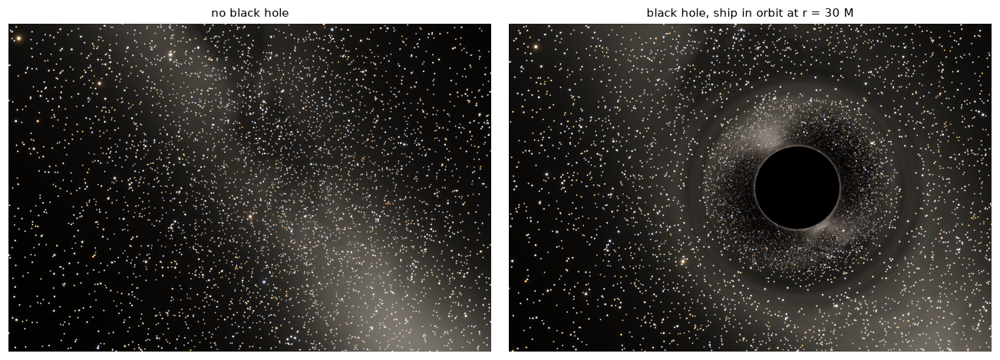
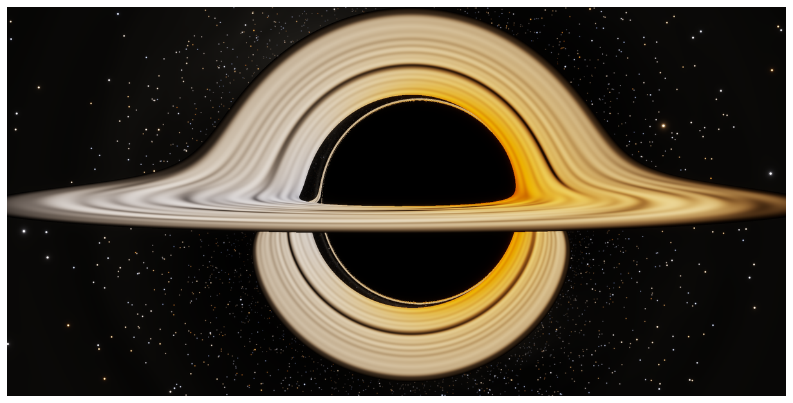
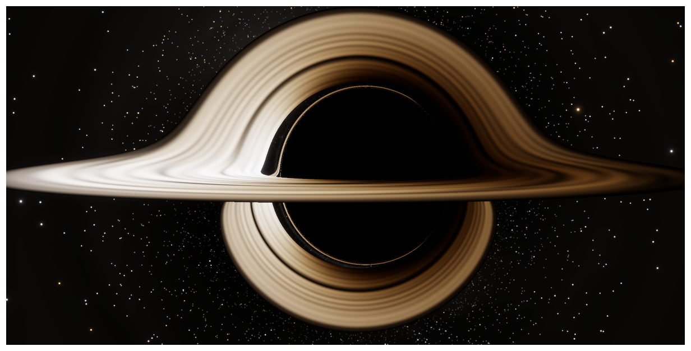

Ray tracing a spinning black hole from Einstein’s equations, the way Kip Thorne and Double Negative did for the film, and then switching on the Doppler shifts the film left out
A from-scratch recreation of the black hole Gargantua from Interstellar: the general relativity of light around a spinning black hole, the DNGR renderer that Kip Thorne and Double Negative built for the film, the warped star field, the accretion disk as the film showed it, and the same disk with the Doppler and gravitational shifts a real observer would see.
sci-fi
general relativity
black holes
physics
python
Author
Paul Milne
Published
October 26, 2026
“Interstellar is the first Hollywood movie to attempt depicting a black hole as it would actually be seen by somebody nearby.”
Oliver James, Eugénie von Tunzelmann, Paul Franklin and Kip Thorne, Classical and Quantum Gravity (2015)
Show code
import sys, math, time, warningsfrom pathlib import Pathwarnings.filterwarnings("ignore")ROOT = Path.cwd().resolve().parents[1] /"gargantua"sys.path.insert(0, str(ROOT))import numpy as npimport matplotlib.pyplot as pltfrom blackhole import kerr, render as R, sky as SK, disk as D, schwarzschild as Sfrom blackhole.colour import tonemap, bloomplt.rcParams.update({"figure.dpi": 110, "axes.spines.top": False, "axes.spines.right": False})def show(ax, img, title=None): ax.imshow(np.clip(img, 0, 1), interpolation="lanczos") ax.set_axis_off()if title: ax.set_title(title, fontsize=10)def hero(img, name=None, w=11): h = w * img.shape[0] / img.shape[1] fig = plt.figure(figsize=(w, h)) ax = fig.add_axes([0, 0, 1, 1]) show(ax, img)if name: plt.imsave(name, np.clip(img, 0, 1)) plt.show()milky = SK.Sky(SK.milky_way(2048))stars = SK.star_catalogue()# the film's geometry: spin 0.6, camera at r = 74.1 M, 3.44 degrees above the disk# (Figures 13-16 of James et al. 2015)A_FILM, R_CAM, TH_CAM, R_OUT =0.6, 74.1, 86.56, 20.0
Figure 1: Gargantua as Interstellar showed it, recreated here from the equations: a black hole spinning at 0.6 of the maximum, its thin accretion disk glowing at a uniform 4500 K, seen from 74 M away and 3.4° above the disk, without the Doppler and gravitational frequency shifts (which the film left out) and with a soft lens glare (which the film added).
The black hole in Christopher Nolan’s Interstellar (2014) is one of the most recognisable images in modern cinema: a black disk with a band of glowing gas across its middle and the same band arched over its top and curled under its bottom. It is also one of the very few images in any film that was computed from general relativity rather than designed. The physicist Kip Thorne wrote down the equations, and a team at the visual-effects company Double Negative turned them into a renderer.
This post rebuilds that image from scratch: the spacetime of a spinning black hole, the paths of light rays through it, a camera, a star field and an accretion disk. All of it is in a few hundred lines of Python. It also renders what the film chose not to show, the same disk as it would really appear, with its light shifted in colour and brightness by the motion of the gas and the pull of the hole.
The mathematics is covered properly in a four-part explainer series, and this post links to it as it goes:
The account of how the film’s images were made, and the parameters used to match them, come from the paper the Double Negative team and Thorne published afterwards: James, von Tunzelmann, Franklin and Thorne (2015), Gravitational lensing by spinning black holes in astrophysics, and in the movie Interstellar. Thorne’s book The Science of Interstellar (2014) tells the same story for a general reader. The star field and the disk’s texture here are synthetic, so these are recreations of the film’s physics, not copies of its frames. Every number in the code outputs is computed when the page is built.
Kip Thorne and the Double Negative Gravitational Renderer
Kip Thorne is a theoretical physicist at Caltech who has spent his career on black holes, gravitational waves and the strange corners of general relativity. He co-wrote Gravitation, the standard graduate text, and co-founded LIGO, which detected gravitational waves from colliding black holes in 2015. For that he shared the 2017 Nobel Prize in Physics with Rainer Weiss and Barry Barish. Interstellar grew out of a film treatment he developed with the producer Lynda Obst, and he served as the film’s scientific adviser and an executive producer.
According to the 2015 paper, work on the black hole began in May 2013, when Nolan asked Double Negative to build realistic images of a spinning black hole and its disk at IMAX resolution. Thorne wrote a step-by-step prescription for mapping light from the sky, or from a disk, onto a camera near a spinning hole, and checked it in Mathematica. A Double Negative team including Oliver James, Eugénie von Tunzelmann and the visual-effects supervisor Paul Franklin turned it into a production renderer, the Double Negative Gravitational Renderer (DNGR):
about 40,000 lines of C++, running on Double Negative’s render farm of 1,633 blade servers;
23 million pixels per IMAX frame, each traced as a ray bundle, a narrow beam whose cross-section is evolved through curved spacetime, so that stars stay sharp and smooth without flickering;
from 30 minutes to several hours per frame on 10 CPU cores;
the camera’s motion, relativistic aberration, Doppler shifts and gravitational redshift all built in.
Then came the film-making decisions, and they matter for what follows:
Spin. Gargantua’s story needs an almost maximally spinning hole: that is what lets an hour on Miller’s planet cost seven years on Earth. At that spin the shadow is flattened on one side, the disk’s images pile up along the flat edge, and the disk looks off-centre. Nolan and Franklin judged that too confusing for a mass audience, so the images use spin \(a = 0.6\) (in units of the hole’s mass) instead.
Doppler shifts. Gas in the disk orbits at a good fraction of the speed of light. A real observer would see the approaching side blue-shifted and blazing and the receding side red-shifted and dim. The film left these shifts out.
The disk. It is an “anaemic” artist’s disk, not a real quasar disk, which would fry anyone nearby with X-rays. It is thin, it is not accreting, and it shines as a blackbody at a uniform 4500 K.
Lens flare. Audiences expect images filmed through a real camera, so the final images were convolved with the measured point-spread function of an IMAX lens, which gives the soft “veiling flare” glow.
The recreation follows the same recipe, with the same numbers wherever the paper gives them.
The mathematics in five steps
Everything rests on one idea. Light follows null geodesics, the straightest possible paths through curved spacetime with zero interval. Rendering means following those paths backwards, from the camera out to wherever the light came from.
1. The spacetime. A spinning black hole of mass \(M\) and angular momentum \(J = aM\) is described by the Kerr metric. In Boyer–Lindquist coordinates, with \(G = c = M = 1\),
Here \(\alpha\) is the slowing of clocks, \(\omega\) the angular velocity at which space itself is dragged round, and \(\rho, \Delta, \varpi\) simple functions of \(r\) and \(\theta\) (part 3).
2. Three conserved quantities. A light ray in this spacetime carries three constants: its energy, its angular momentum about the spin axis, \(b\), and Carter’s constant, \(q\). Carter discovered \(q\) in 1968 from a hidden symmetry that lets the equations of motion separate (part 3). Together they fix a ray’s path completely.
3. The ray equations. DNGR integrates Hamilton’s equations for the Hamiltonian \(H = \tfrac12 g^{\mu\nu}p_\mu p_\nu\):
with \(R(r)\) and \(\Theta(\theta)\) built from \(b\) and \(q\). Five coupled ODEs per pixel.
4. The camera. Each pixel’s direction is converted, by relativistic aberration, from the camera’s frame to that of a local “zero-angular-momentum” observer swept round by frame dragging, and from there into the ray’s initial momenta (part 2, part 3).
5. Shading. A ray that escapes shows the point of the sky it reaches. Lensing conserves surface brightness, by Liouville’s theorem, so that point keeps its true brightness (part 2). A ray that reaches the horizon is black. A ray that hits the disk shows the gas’s light, shifted in frequency by a factor \(g\) that combines Doppler shift and gravitational redshift (part 4).
The ray tracer behind this post integrates those equations with an adaptive Runge–Kutta method, compiled with numba, and checks itself against everything known exactly: the exact deflection angle for a non-spinning hole, Bardeen’s formula for the edge of a spinning hole’s shadow, the conservation of Carter’s constant (which the integrator never uses), and the camera speeds quoted in the DNGR paper. The details, and the checks, are in the explainers.
Step 1: a black hole in front of the stars
Start with no disk at all: a non-spinning black hole and the night sky behind it, seen from a ship in orbit \(30\,M\) from the hole. This is the classic image of gravitational lensing, the one Alain Riazuelo’s film clip made famous and that opens the DNGR paper’s discussion.
Show code
r_cam =30.0tab = S.sky_angle_table(r_cam)cam = kerr.Camera(r_cam, math.pi /2, 0.0, beta="orbit", fov=90)NX2, NY2, ss =1000, 680, 2N = cam.directions(NX2 * ss, NY2 * ss)Ns = S.aberrate(N, cam.beta)def render_sky(v, cap): fp = SK.footprint(v, ~cap) diffuse = R.downsample(np.where(cap[..., None], 0, milky.sample(v, fp)), ss) idx, x, y, mu, om = SK.lensed_stars(kerr.Camera.right_handed(N), v, ~cap, stars) pts = SK.paint_stars((NY2, NX2), stars, idx, (x +0.5) / ss -0.5, (y +0.5) / ss -0.5, mu, 2* np.abs(om) * ss * ss)return tonemap(bloom(diffuse + pts, weights=(0.03, 0.02, 0.01)), 2.0)# no hole: each (aberrated) pixel sees the sky straight aheadv_flat = np.stack([-Ns[..., 0], Ns[..., 1], Ns[..., 2]], -1)img_flat = render_sky(v_flat, np.zeros(v_flat.shape[:2], bool))v, cap = S.lens_directions(Ns, r_cam, cam.theta, tab)img_hole = render_sky(v, cap)fig, ax = plt.subplots(1, 2, figsize=(12, 4.2))show(ax[0], img_flat, "no black hole")show(ax[1], img_hole, f"black hole, ship in orbit at r = {r_cam:g} M")plt.tight_layout()plt.show()psi_E = math.degrees(S.einstein_ring(r_cam, tab))psi_sh = math.degrees(S.shadow_angle(r_cam))print(f"orbital speed {cam.beta:.3f}c; for a hovering observer here: shadow radius {psi_sh:.1f}°, Einstein ring {psi_E:.1f}°")

Figure 2: The night sky seen from a ship orbiting a non-spinning black hole at 30 M (90° field of view). Left: the same sky with the hole removed. Right: with the hole. Light from behind the hole is bent round it: the Milky Way is split and wrapped round the Einstein ring, and a second, inverted image of the entire sky is squeezed into the bright annulus against the shadow.
orbital speed 0.189c; for a hovering observer here: shadow radius 9.6°, Einstein ring 23.7°
The hole bends every ray that passes it, by an angle that grows without limit as the ray grazes the photon sphere at \(r = 3M\). Rays that pass inside the critical impact parameter \(b = 3\sqrt3\,M\) fall in, which makes the shadow two and a half times wider than the horizon itself. Light from directly behind the hole arrives from every direction round the Einstein ring. Inside the ring sits a second image of the whole sky, and inside that a third, each about \(e^{\pi} \approx 23\) times thinner than the last (part 1).
Step 2: spin
Now let the hole spin. Frame dragging carries light round with the hole: rays travelling with the rotation can skim closer before escaping, and rays travelling against it are captured further out. The shadow loses its circular symmetry.
Figure 3: The sky round black holes of three spins, seen from the film’s camera position, 74.1 M away. The hole rotates so that its left side moves towards the camera. As the spin rises the shadow shifts to the right and its approaching edge flattens: at Gargantua’s story spin it is a ‘D’.
This is the shape Nolan and Franklin turned down. At the film’s \(a = 0.6\) the shadow is still nearly round and almost centred. At \(a = 0.999\) it is a D flattened on the approaching side, which is the first thing a viewer would notice about a fast-spinning black hole (part 3).
Step 3: Gargantua as the film showed it
Add the disk: a thin sheet of gas in the equatorial plane, orbiting on circular geodesics from the innermost stable orbit (\(3.83\,M\) for \(a = 0.6\)) out to about \(20\,M\), glowing like a 4500 K blackbody and seen from the film’s camera position. The disk is a flat ring, yet the image wraps it over and under the hole. Light leaving the top face of the far side of the disk passes over the hole and is bent down towards the camera, so the far side appears arched above the shadow. Light from the underside of the far side passes beneath the hole and is bent up, forming the ring below the shadow. A third, thin image of the top face hugs the shadow’s edge.
The difference spin makes is clearest with the disk in place. Here the same disk surrounds a hole at the film’s spin and at nearly the story’s spin (compare Figures 14 and 15a of the DNGR paper):
Figure 4: The same disk (from 3.83 M to 20 M, no frequency shifts) round a hole spinning at a = 0.6 (left) and at a = 0.999 (right), seen from the same camera. At high spin the shadow flattens on its left, approaching side, extra thin images of the disk crowd along the flat edge, and the disk looks off-centre: the confusion the film-makers avoided.
Step 4: switching on the physics the film left out
The gas does not sit still. At the inner edge of the disk it orbits at more than half the speed of light, so its light is Doppler shifted: up in frequency on the approaching side and down on the receding side. Everywhere, it is also gravitationally redshifted as it climbs out of the hole’s well. Both are captured by one factor per ray,
\[
g = \frac{\nu_\text{camera}}{\nu_\text{emitted}} = \frac{E_\text{camera}}{u^t\,(1 - \Omega\,b)},
\]
where \(u^t\) and \(\Omega\) describe the orbiting gas and \(b\) is the ray’s angular momentum (part 4). The shift changes the colour, and through Liouville’s theorem (\(I_\nu/\nu^3\) is the same for every observer) it changes the brightness too. A blackbody at temperature \(T\), seen through a shift \(g\), is exactly a blackbody at \(gT\), so its total brightness scales as \(g^4\).
Show code
hit = tr_film["outcome"] == kerr.DISKg = tr_film["g"][hit]print(f"rays hitting the disk: {hit.sum():,} of {hit.size:,}")print(f"frequency shift g: {g.min():.2f} (receding side) to {g.max():.2f} (approaching side)")print(f"apparent temperature of the 4500 K gas: {4500*g.min():.0f} K to {4500*g.max():.0f} K")print(f"total brightness, g^4: from {g.min()**4:.3f} to {g.max()**4:.2f} times the unshifted value")g_lo, g_hi = g.min(), g.max()
rays hitting the disk: 1,725,377 of 5,120,000
frequency shift g: 0.33 (receding side) to 1.51 (approaching side)
apparent temperature of the 4500 K gas: 1476 K to 6805 K
total brightness, g^4: from 0.012 to 5.23 times the unshifted value
The 4500 K gas appears anywhere from 1476 K to 6805 K. The DNGR paper quotes shift factors of “order 1.5 and 0.4” for its version of this disk, and the range here is 0.33 to 1.51. The paper also shows the effect in two steps, colour first and then brightness. Here are the same two steps:
Show code
for shift in ["colour", "full"]: img, _ = R.compose(tr_film, A_FILM, SS, sky=milky, stars=stars, star_gain=0.6, disk=dict(model="film", T=4500, shift=shift, r_out=R_OUT), exposure=0.35) hero(img)

(a) Gargantua’s disk with the frequency shifts switched on. Top: the colour shift only, with brightness held at its unshifted value (the step shown in Figure 15b of the DNGR paper): the approaching left side shifts towards white (at 6800 K its gas is almost exactly the display’s white point), and the receding right side towards orange. Bottom: colour and brightness together. This is what an observer at the camera would actually see.

(b)
Figure 5
The true image is lopsided. The approaching side is white-hot and the receding side dims to a dull red-brown, up to 86 times fainter in total light and far fainter still to the eye. The DNGR paper calls the fully realistic disk “exceedingly lopsided, with the hole’s shadow barely discernible”, and it was never a candidate for the film. Nature does not share Hollywood’s concerns. The asymmetry is real, and it is why the Event Horizon Telescope’s 2019 image of the black hole in M87 is a ring brighter on one side.
Here is the film’s version beside the physical one:
Figure 6: The same black hole, disk and camera. Left: as Interstellar showed it, without frequency shifts. Right: as it would really look, with Doppler and gravitational shifts in colour and brightness.
How long it takes
Computing power has moved on since 2014, and a still image at blog resolution is far less demanding than a 23-million-pixel IMAX frame traced as ray bundles.
Show code
n_rays = tr_film["outcome"].sizeprint(f"film-geometry image: {n_rays:,} rays ({NX}x{NY} pixels, {SS}x{SS} samples each)")print(f"geodesic integration: {float(tr_film['seconds']):.1f} s on this machine "f"({n_rays/float(tr_film['seconds'])/1e3:.0f} thousand rays per second)")print(f"integration steps per ray: median {np.median(tr_film['steps']):.0f}, "f"99th percentile {np.percentile(tr_film['steps'], 99):.0f}")counts = np.bincount(tr_film["outcome"].ravel(), minlength=4)print(f"rays escaping to the sky {counts[0]:,}; into the hole {counts[1]:,}; onto the disk {counts[2]:,}")
film-geometry image: 5,120,000 rays (1600x800 pixels, 2x2 samples each)
geodesic integration: 18.8 s on this machine (272 thousand rays per second)
integration steps per ray: median 130, 99th percentile 353
rays escaping to the sky 2,962,609; into the hole 432,014; onto the disk 1,725,377
Each ray takes on the order of a hundred adaptive Runge–Kutta steps. Once a ray map is traced, shading it with a different disk model or a different set of frequency shifts takes a second or two, which is how the film, colour-shift and full versions above all come from one trace.
What this leaves out
A few things that DNGR did, and this recreation does not:
Ray bundles. DNGR evolved the cross-section of a narrow beam around each pixel’s ray using the equation of geodesic deviation, which gives exact magnifications and smooth, flicker-free motion. Here, the same information comes from differences between neighbouring rays: stars are placed by mapping triangles of the image grid onto the sky (part 2), and extended light is filtered with a mip-map.
The disk. The film used a thin disk, a 17-million-voxel volumetric disk and procedurally textured close-ups. Here it is an infinitely thin, opaque disk with a simple streak texture.
The lens and the film stock. DNGR convolved images with an IMAX lens’s measured point-spread function and computed colours with the sensitivity curves of motion-picture film. Here a generic glare and the human eye’s colour response (CIE 1931) stand in.
Motion. In the film the camera moves, so stars stream round the critical curves and the images are motion-blurred. These are stills.
Thorne’s other image
The DNGR paper ends by noting that the same code produced Interstellar’s wormhole, described in a companion paper (James, von Tunzelmann, Franklin and Thorne 2015, American Journal of Physics). The paper’s own assessment is that its work on the disk “retreads largely known ground”, which goes back to Jean-Pierre Luminet’s 1979 image of a disk round a non-spinning hole, computed and then drawn by hand. Its lensing of a star field by a camera close to a fast-spinning hole, with the caustics and critical curves that structure it, was new. A Hollywood film paid for research in general relativity, and the equations to reproduce it fit in a few hundred lines of Python.
References
James, O., von Tunzelmann, E., Franklin, P. and Thorne, K. S. (2015). Gravitational lensing by spinning black holes in astrophysics, and in the movie Interstellar. Classical and Quantum Gravity 32, 065001. arXiv:1502.03808.
James, O., von Tunzelmann, E., Franklin, P. and Thorne, K. S. (2015). Visualizing Interstellar’s wormhole. American Journal of Physics 83, 486–499.
Thorne, K. S. (2014). The Science of Interstellar. W. W. Norton.
Kerr, R. P. (1963). Gravitational field of a spinning mass as an example of algebraically special metrics. Physical Review Letters 11, 237–238.
Carter, B. (1968). Global structure of the Kerr family of gravitational fields. Physical Review 174, 1559–1571.
Bardeen, J. M. (1973). Timelike and null geodesics in the Kerr metric. In Black Holes (Les Houches 1972), eds. C. DeWitt and B. S. DeWitt, 215–239.
Luminet, J.-P. (1979). Image of a spherical black hole with thin accretion disk. Astronomy and Astrophysics 75, 228–235.
Event Horizon Telescope Collaboration (2019). First M87 Event Horizon Telescope results. I. The shadow of the supermassive black hole. Astrophysical Journal Letters 875, L1.